기획 우선(Planning-first) 개발 타임라인
1주차 — SRS 요구사항 명세서
2주차 — 화면 설계(Wireframe) · 컴포넌트 구조 설계
2~3주차 — ERD · API 명세 (Swagger 문서화)
3~4주차 — BackEnd · FrontEnd 구현 → Test
"오늘 뭐 보지?"라는 선택 피로를 줄이기 위해 만든 인터랙션 기반 영화 추천 웹. 10개의 카드와 PASS / LIKE / RATE / SAVE 인터랙션으로 취향의 흐름을 만들어갑니다.
"오늘은 이런 거 말고 좀 다른 걸 보고 싶은데" — 비슷한 장르·이미 본 영화·줄어드는 새로운 시청 경험이 기존 추천 서비스의 한계였습니다. MOVWA는 효율 · 상호작용 · 발견 세 가치로 선택의 부담을 줄이고 취향의 확장을 돕는 영화 추천 서비스입니다.
첫 팀 프로젝트였던 만큼, 개발 분량보다 기획의 탄탄함에 더 많은 시간을 썼습니다. 개발(3~4주차)에 들어가기 전, 1~2주차에 요구사항·화면·데이터 구조를 먼저 확정했습니다.
FigmaNotionSwaggerGoogle Sheets
심볼 마크(★)와 둥근 MOVWA 워드마크 레터링을 직접 디자인했습니다. MOVIE+WAVE / MOVIE+WATCH의 의미를 담아 부드럽고 친근한 브랜드 톤을 만들었고, 이 로고타입을 서비스 전반의 아이덴티티로 사용했습니다.
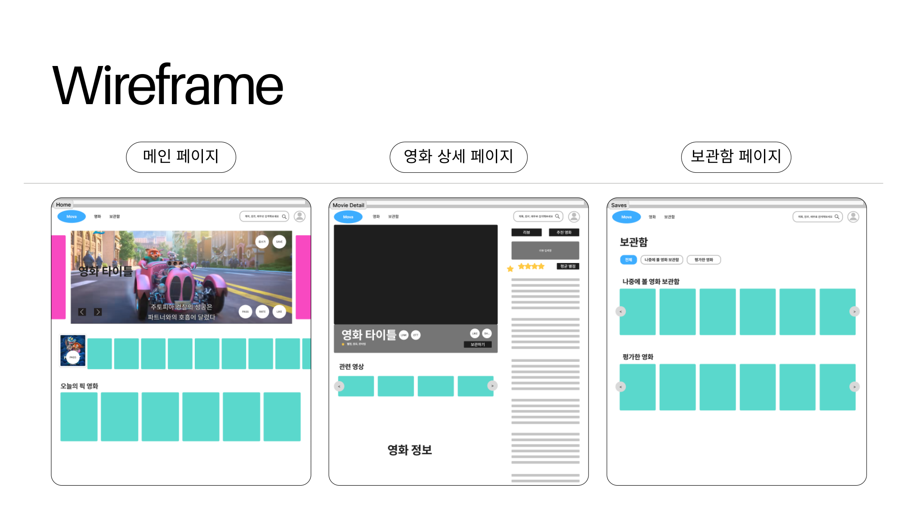
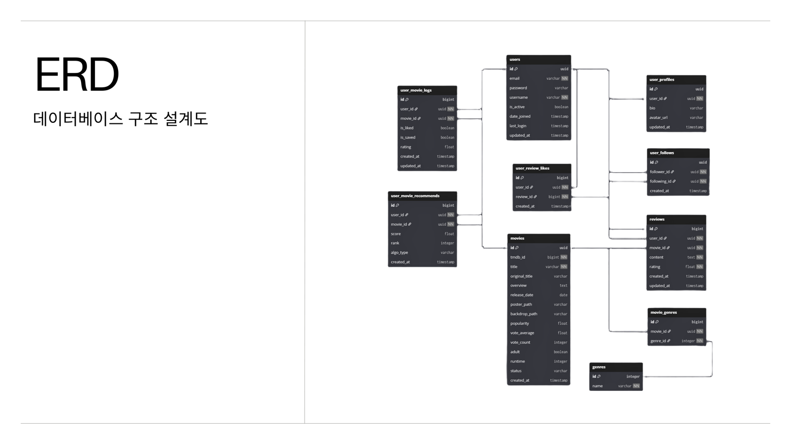
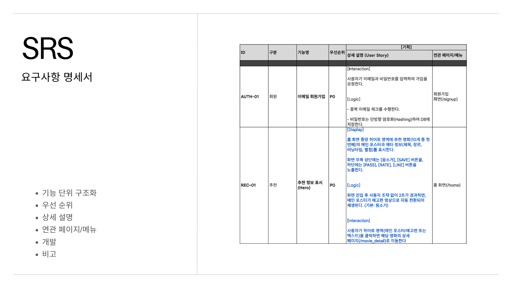
1주 프로젝트에서 화면을 빠르게 안정적으로 붙이기 위해, 상태와 API 책임을 처음부터 분리하는 데 집중했습니다. 추천 알고리즘·모델·백엔드 API의 최종 구현은 BE 담당이고, 저는 이를 소비하는 FE 구조를 맡았습니다.
화면별 상태와 computed 값을 선언적으로 분리. 상세의 finalYoutubeUrl, 현재 리뷰, 홈 현재 영화 상태 계산에 사용.
authStore / homeStore / movieStore / libraryStore 4개로 기능별 상태 분리. 화면 코드와 API 호출 책임을 떼어냄.
requiresAuth meta로 /home, /movie/:id, /library 인증 라우트 보호.
authApi / moviesApi / libraryApi / reviewsApi / http로 요청 책임 분리. 토큰 헤더, 에러 처리 중복 제거.
버튼/다이얼로그/별점/카드/chip/progress UI를 짧은 기간 안에 일관된 밀도로 구현.
예고편/포스터를 통한 영화 탐색 경험. 히어로 영역과 상세 페이지 시각 요소.
화면을 "페이지 · 도메인 컴포넌트 · API/store"로 나눠, 백엔드 API가 붙을 때 바뀌어야 할 위치를 줄였습니다.
프론트는 인터랙션을 Pinia store에서 상태로 관리하고 API module로 백엔드와 통신. API 경로가 바뀌어도 화면보다 API module에서 먼저 대응할 수 있게 했습니다.
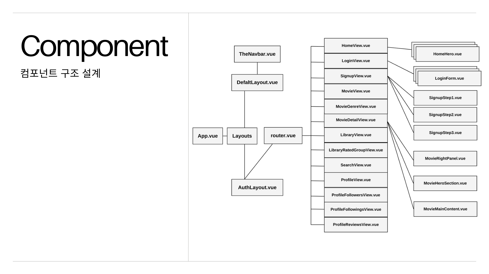
프론트엔드부터 백엔드까지, MOVWA 서비스 전체의 주요 기능입니다. 이 중 내 담당(FE)은 다음 섹션에서 화면과 함께 자세히 다룹니다.
2인 팀의 단독 프론트엔드로, 주요 화면 전부를 직접 구현했습니다. 초기 구조·인증부터 공통 UI 설계까지 서비스 흐름 전반의 화면 책임을 맡았습니다.
Vite 기반 Vue 프로젝트에 Vuetify · Pinia · Router · Axios를 연결하고
랜딩/로그인/회원가입 화면과 인증 route guard의 초기 구조를 만들었습니다.
http.js에 Axios 인스턴스와 요청 인터셉터(localStorage accessToken을 Authorization 헤더에 자동 첨부)를 구성하고,
Base URL을 VITE_API_BASE_URL 환경변수로 관리했습니다. 로그인 성공 시 JWT(Access/Refresh)를 저장하며,
초기 연동에서 발생한 프론트–백엔드 포트 불일치(404)도 Base URL 정리로 해결했습니다.
LandingView → LoginView / SignupViewauthStore.login() → authApi → http request interceptorlocalStorage accessToken 저장router.beforeEach requiresAuth → HomeViewLandingView.vueLoginView.vueSignupStep1~3.vue
authStore.jsauthApi.jshttp.jsrouter/index.js
현재 영화 · 추천 목록 · 인덱스 · 로딩/음소거 상태를 homeStore로 분리하고,
HomeHero / RecommendationDeck / MovieActions / TodaysPick 컴포넌트로 나눴습니다.
하단 추천 포스터를 클릭하면 히어로의 배경 · 정보 · 예고편이 즉시 전환되도록 연동하고,
TheNavbar는 useRoute 기반 active 상태로, TodaysPick 그리드는 4열 → 6열로 정보 밀도를 높였습니다.
PASS / LIKE / RATE / SAVE는 단일 status로 관리해 상태 충돌을 막았습니다.
HomeView mounted → homeStore.initHome()moviesApi.getRecommendations(10) → HomeHero currentMovieHomeView.vueHomeHero.vueRecommendationDeck.vue
TodaysPick.vueMovieActions.vuehomeStore.js
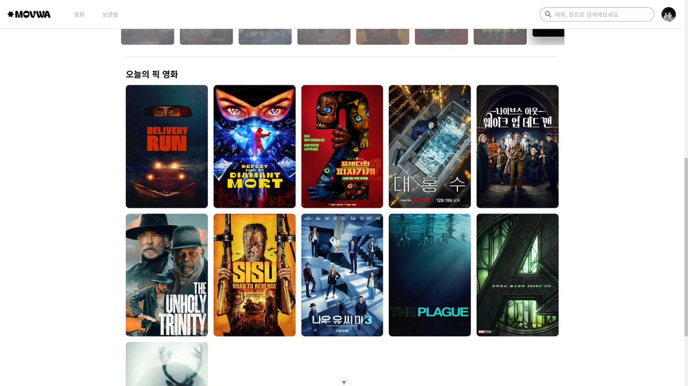
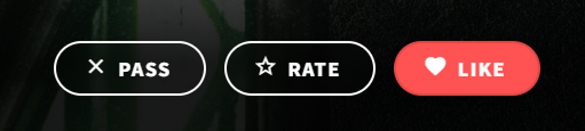
박스오피스 순위 · 개봉 예정작 등 큐레이션 섹션과, 장르별 필터 · 정렬(인기순 등)로 원하는 영화를 탐색하는 목록 화면을 구현했습니다. 가로 스크롤 큐레이션, 그리드 목록, 드롭다운 필터 UI를 구성했습니다.
MovieView.vueMovieGenreView.vuemoviesApi.js
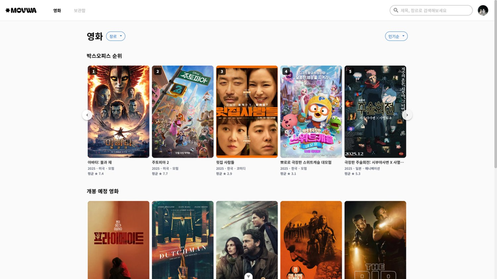
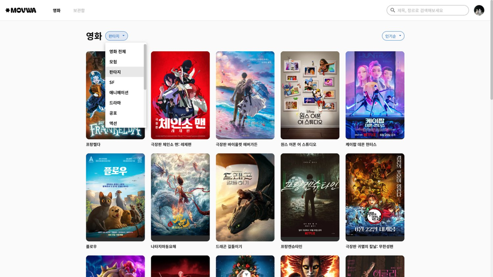
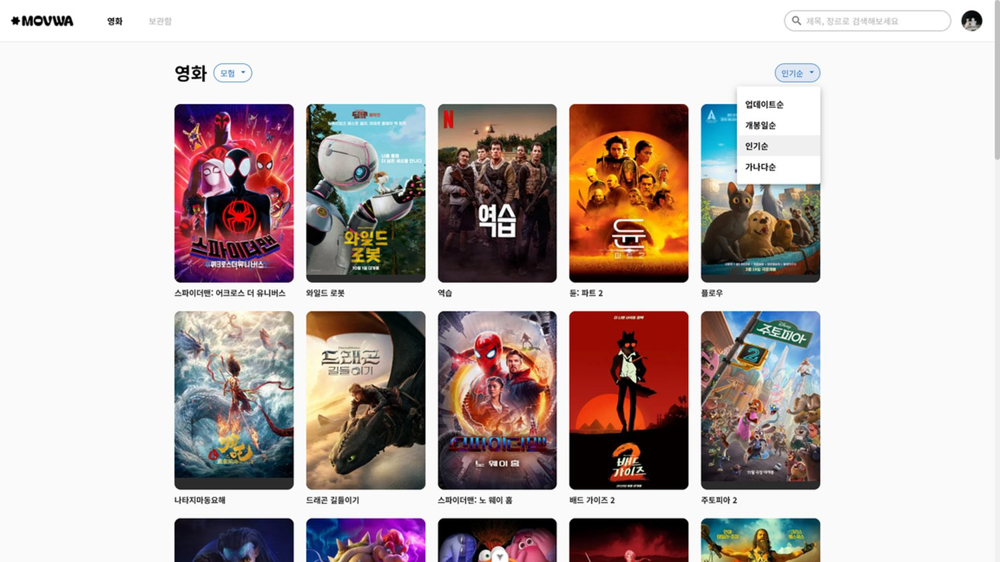
상세 화면을 히어로 예고편, 영화 기본 정보, 본문 콘텐츠, 우측 패널로 분리. 상세 API 응답의 credits를 movieStore에서 먼저 파싱해 cast/crew 목록으로 가공하고, 별점/텍스트 기반 리뷰 작성 팝업도 함께 구현했습니다.
/movie/:id → movieStore.fetchMovieDetail(id)MovieDetailView.vueMovieHeroSection.vue
MovieMainContent.vueMovieRightPanel.vue
MovieSideInfo.vueMovieReviewDialog.vuemovieStore.js
저장한 영화와 평가한 영화를 확인하는 보관함을 구성. 탭/섹션/가로 스크롤로 탐색하게 하고, 평가 영화는 점수대별 그룹(5.0 / 4점대 / … / 0점대)으로 분리했습니다. TheNavbar의 현재 경로 기반 active 상태도 함께 개선했습니다.
LibraryView mounted → fetchSavedMovies() / fetchRatedMovies()/movie/:idLibraryView.vuelibraryStore.js
libraryApi.jsMovieCard.vueTheNavbar.vue
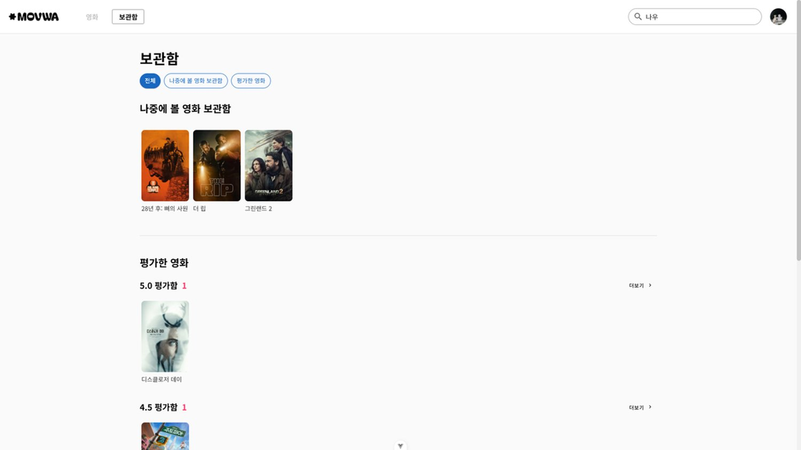
프로필 화면에 보관함 요약(나중에 볼 / 평가한 / 리뷰), 팔로우 · 팔로워, 캘린더를 배치하고, 프로필 수정 모달(별명 · 소개 · 이미지)을 구현했습니다.
ProfileView.vueaccountsApi.js
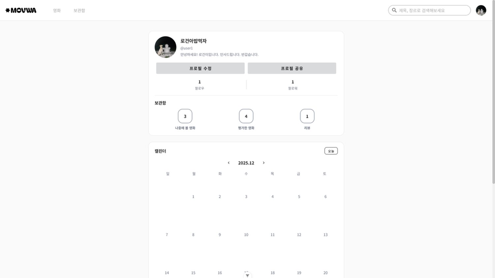
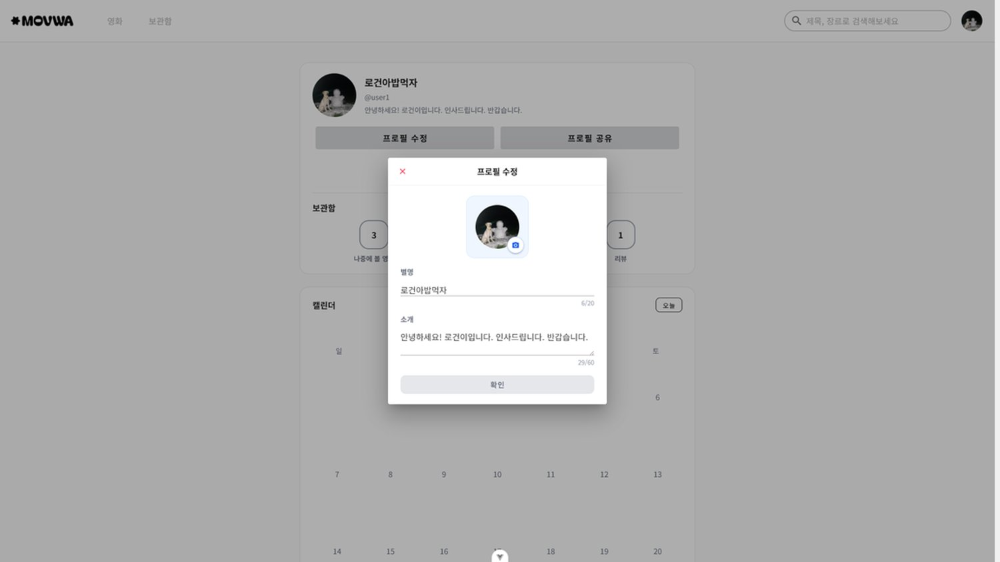
인증 화면은 AuthLayout, 서비스 내부 화면은 DefaultLayout로 나누고 공통 네비게이션을 TheNavbar로 분리. 반복되는 영화 카드/액션 버튼/히어로 미디어/리뷰 다이얼로그를 컴포넌트로 잘라 한 화면 컴포넌트가 비대해지지 않도록 정리했습니다.
API 계약과 화면 상태 사이의 작은 불일치들이 1주 프로젝트의 안정성을 크게 흔들었습니다.
화면에서 입력받은 password를 그대로 보내면 dj-rest-auth가 기대하는 password1, password2 필드와 맞지 않아 400 응답이 발생했습니다.
프론트 입력 모델과 백엔드 인증 라이브러리의 표준 필드명이 달랐습니다. 화면은 비밀번호를 하나 입력받지만, API는 확인용 필드까지 포함해야 했습니다.
const payload = {
email: this.signupForm.email,
username: this.signupForm.username,
nickname: this.signupForm.nickname,
password1: this.signupForm.password,
password2: this.signupForm.password,
}
단계별 입력값을 백엔드 인증 API가 기대하는 형태로 변환하는 기준을 만들고,
회원가입 연동을 화면별 임시 처리 대신 authStore.signup() 흐름으로 관리하게 됐습니다.
credits 값이 문자열 JSON으로 오거나 객체로 오는 경우가 있어, 화면에서 직접 credits.cast에 접근하면 런타임 오류 가능성이 컸습니다.
API 응답 데이터의 직렬화 형태가 화면에서 기대하는 형태와 항상 같지 않았습니다.
const credits =
typeof data.credits === 'string'
? JSON.parse(data.credits)
: data.credits
castList.value = credits.cast ? credits.cast.slice(0, 10) : []
crewList.value = credits.crew || []
상세 화면은 응답 타입 차이를 신경 쓰지 않고 가공된 castList / crewList만 소비하게 됐습니다.
같은 영화에 LIKE, RATE, SAVE를 반복하면 화면상 여러 상태가 동시에 남아 오늘의 픽 목록과 현재 카드 상태가 따로 움직였습니다.
추천 카드의 상태 기준이 명확하지 않으면 버튼별 local state가 서로 충돌합니다.
const likeCurrentMovie = async () => {
if (!currentMovie.value) return
const isAlready = currentMovie.value.status === 'liked'
currentMovie.value.status = isAlready ? null : 'liked'
if (!isAlready) addToPicks(currentMovie.value)
else removeFromPicks(currentMovie.value.id)
}
카드를 단일 status(passed / liked / rated / saved) 기준으로 다루고,
toggle 시 오늘의 픽 추가/제거를 함께 일관되게 처리했습니다.
홈 히어로에서 예고편이 재생되지 않고 배경 이미지만 표시됐습니다. 프론트 재생 로직 자체는 정상이었습니다.
백엔드 응답의 youtube_key 필드가 null로 내려오고 있었습니다(Serializer 이슈).
화면이 아니라 API 응답 데이터 계약의 문제였습니다.
원인을 프론트가 아닌 BE Serializer로 특정해 팀에 공유하고, 그 사이 프론트는
youtube_key가 없을 때 배경 이미지로 자연스럽게 폴백하도록 처리해 화면이 깨지지 않게 했습니다.
"프론트가 화면만 만드는 게 아니라 API 응답 계약까지 함께 본다"는 걸 체감한 사례였습니다. 영상 유무와 무관하게 안정적인 히어로를 유지했습니다.
포스터 탐색 중에 영상이 즉시 재생되면 화면이 과하게 흔들리고 추천 카드 전환 시 이전 영상이 남았습니다.
추천 카드 변경, YouTube iframe 로딩, 음소거 상태가 모두 같은 히어로 영역에 얽혀 있었습니다.
const resetVideoTimer = () => {
showVideo.value = false
if (videoTimer) { clearTimeout(videoTimer); videoTimer = null }
if (videoUrl.value) {
videoTimer = setTimeout(() => { showVideo.value = true }, 2000)
}
}
watch(() => props.movie?.id, resetVideoTimer, { immediate: true })
watch(videoUrl, resetVideoTimer)
포스터를 먼저 보여주고 2초 뒤 예고편을 띄우며, 영화가 바뀌면 타이머를 초기화해 이전 상태가 남지 않게 했습니다.
저장 영화와 평가 영화를 한 목록에 섞으면 의도가 흐려지고, 영화가 늘어날수록 탐색성이 떨어졌습니다.
보관함은 단순 grid가 아니라 저장/평가 섹션, 점수 그룹, 가로 스크롤, 상세 이동을 함께 다뤄야 했습니다.
const ratedMoviesGrouped = computed(() => {
const groups = [
{ score: 5, label: '5.0 평가함', list: [] },
{ score: 4, label: '4점대', list: [] },
// ... 3 / 2 / 1 / 0점대
]
ratedMoviesRaw.value.forEach((item) => {
const groupIndex = 5 - Math.floor(parseFloat(item.rating))
if (groups[groupIndex]) groups[groupIndex].list.push(item.movie)
})
return groups.filter((g) => g.list.length > 0)
})
저장/평가 섹션을 분리하고 평가 영화는 점수대별 그룹으로 표시. 빈 그룹은 자동 필터링했습니다.
MOVWA를 만들면서 가장 크게 배운 점은 프론트엔드는 화면을 배치하는 일만이 아니라 사용자의 선택을 어떤 상태로 해석하고 백엔드 API와 어떤 계약으로 주고받을지 정하는 일이라는 점이었습니다. PASS, LIKE, RATE, SAVE는 버튼 네 개처럼 보이지만, 실제로는 추천 품질·보관함·상세까지 이어지는 사용자 신호였습니다. 화면을 만들기 전에 서비스 가치·API 응답·상태 전이를 먼저 합의하는 기획의 힘을 체감한, Vue와 Git 협업의 좋은 출발점이었습니다.
← 다른 프로젝트 보기